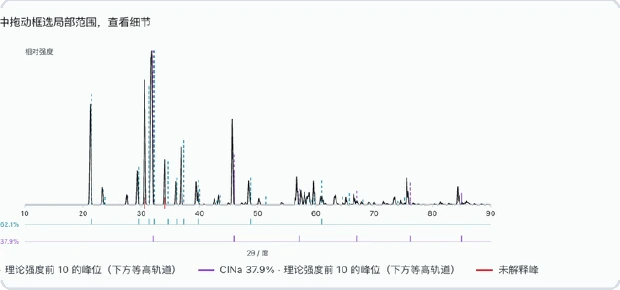
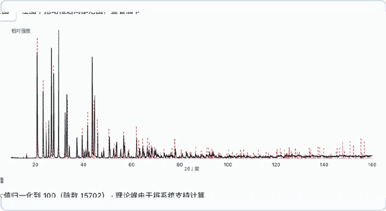
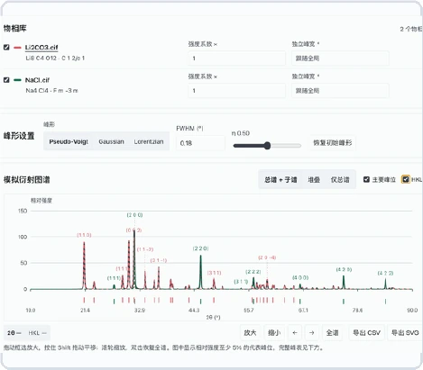
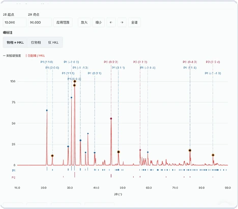
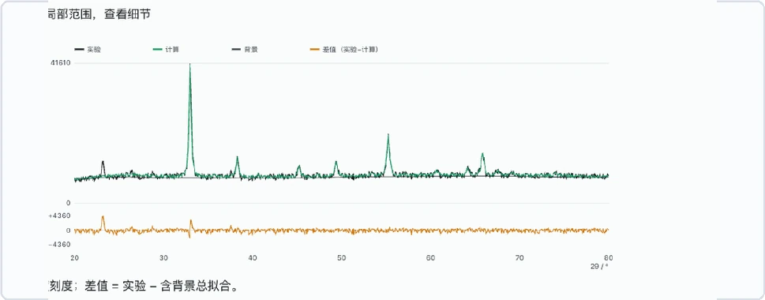
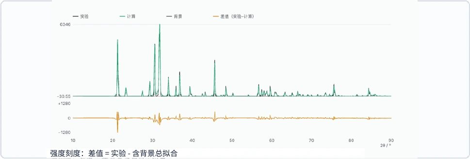
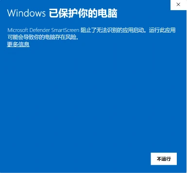
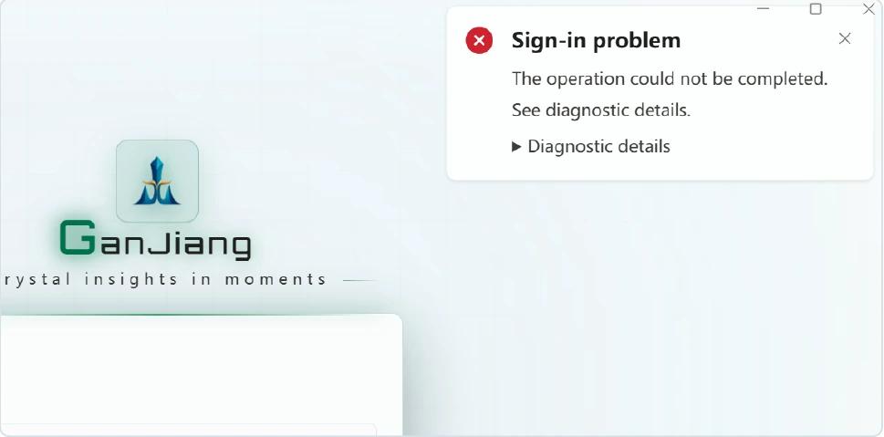

GANJIANG / USER MANUAL
GanJiangUser manual
Prepare data, interpret results and configure models.
Step-by-step instructions and help when something goes wrong.
BEFORE YOU BEGIN
One pattern. One task.
Confirm your settings, then keep a record of your results.
GET ORIENTED
Function navigation
Start by choosing the right function. GanJiang brings observed-pattern analysis, structure calculations and crystal viewing into one workspace.

Phase identification
Search for candidate phases from an observed pattern.
Identification + refinement
Identify phases, then refine candidate structures.
Known-phase refinement
Refine supplied CIF structures against your data.
PDF card calculation
Compare theoretical reflections with observed peaks.
XRD simulation
Calculate diffraction patterns from CIF / MCIF files.
Crystal viewer
Inspect the atomic arrangement in a CIF.
PREPARE YOUR DATA
Files & measurement conditions
Prepare the inputs for your task and record the actual measurement conditions before configuring the analysis.
| Function | Required inputs |
|---|---|
| Phase identification | One observed pattern; elements and formula hints are optional. |
| Identification + refinement | One observed pattern; refinement settings are confirmed later. |
| Known-phase refinement | One observed pattern and a CIF for every phase to refine. |
| PDF card calculation | One observed pattern and at least one CIF. |
| XRD simulation | One or more CIF / MCIF files; no observed pattern is needed. |
| Crystal viewer | One CIF. |
Pattern formats
Submit one observed pattern per task. If an instrument-specific file cannot be parsed, export a two-column CSV or XY file from the instrument software. Renaming the extension does not convert the file.
Two-column text typically contains 2θ in degrees and intensity, with one sample per row. Keep angle and intensity aligned. State whether the file contains a header and whether background subtraction, smoothing or normalization has been applied.
Measurement conditions
Record the sample ID, radiation source or wavelength, horizontal-axis units, scan range and instrument parameter file, if available. Software defaults are not evidence of the measurement conditions.
START YOUR FIRST TASK
Create a task & confirm parameters

- Select New task, then choose the required function on the left.
- Use + in the task input box to attach the specific files. Check their names; do not upload a whole test-data archive as one pattern.
- Enter the analysis goal, sample ID and known conditions in the same box. You can extend the prefilled request. The model selector does not set the phase-search model or radiation.
- Send the request. When the confirmation form appears, check the task type, single/multiphase mode, search channels, elements and formula fields.
- The final values in the confirmation form govern the calculation. Submit the form after editing it; closing or cancelling it does not start computation.
- Check execution messages. If the task is still awaiting plan confirmation, submit the form instead of uploading the same files again.
Continue the original task when adding information for the same sample. Create a new task for another sample or a different set of settings, and include the sample ID and conditions in its name to keep outputs distinct.
IDENTIFY A PHASE
Single-phase identification

Search for candidate crystalline phases from one observed pattern without structural refinement. Unknown-phase identification does not require a CIF. Leave the formula field empty for tests without formula hints.
| Option | Purpose |
|---|---|
| Single phase | Search under a single-phase assumption; do not remove unexplained observed peaks on that basis. |
| XMatcher | Pattern-based candidate matching; available without element constraints. |
| XQueryer-LW | Search using supplied elements; valid element constraints are required. |
| Both channels | Select both models in the single-phase form and check their actual execution status. |
| Unknown phase count | Try single-phase identification first; move to the multiphase workflow if the result is inadequate. |
Identify a single phase in the attached pattern without refinement. Known elements: Ca Fe Si O No formula hints. Use XMatcher and XQueryer-LW in the single-phase configuration. Radiation: [actual conditions]. Preprocessing: [actual treatment or none].
Check the result
Check channel success before reviewing candidate rankings and validation. Top 1 means the highest-ranked candidate, not an automatically confirmed phase. Without a candidate list, there is no Top 1 to select.
RESOLVE A MIXTURE
Multiphase identification
Multiphase means multiple crystalline phases in one sample pattern, not multiple uploaded patterns. Select Phase identification, attach one mixed pattern and choose multiphase mode in the form. Use unknown phase count when the count is not established.
The multiphase form offers these two channels. Keep both default channels or select one for a controlled test. Candidates are pooled for validation. Single-phase XQueryer-LW and XMatcher selections do not replace the multiphase settings.
Enter elements separately from formulas
| Field | How to enter it |
|---|---|
| Elements | Enter unique known symbols, e.g. Ca Al Si O Ni S. Do not guess unknown elements; identify a partial list as incomplete. |
| Formula hints | Leave empty if unavailable. For known phases, enter one formula per phase, separated by ASCII commas, semicolons or newlines. |
| CIF | For element-constrained identification without structure hints, upload only the pattern and retain CIFs as reference answers. Attach them for known-phase refinement. |
Identify multiple phases in the attached pattern without refinement or formula hints. Known elements: Ca Al Si O Ni S Use XMatcher-AutoMix and XDecomposer in the multiphase configuration. Radiation: [actual conditions]. Phase count: [unknown or established count].
FROM CANDIDATES TO FIT
Identification + refinement

Identify phases first, then test how candidate structures fit the observed pattern. Supply one pattern and measurement conditions; known elements support the identification stage. Check identification and refinement results separately.
- Select Identification + refinement, attach the pattern and specify single phase, multiphase or unknown phase count.
- Submit the initial identification form after checking elements, formula hints and search channels.
- Review the candidates and their evidence. When the refinement form appears, check the candidate phases or structure files to be used.
- Select an available refinement engine and specify the instrument file, if any, fitting range, parameter constraints and cycles. Do not release all atomic parameters merely to improve the fit.
- Confirm refinement and keep the task session. If communication is interrupted, check the original task before starting the same calculation again.
- Review calculated and observed curves, differences, fit metrics, structure files and validation status, then download the task files.
Identify phases in the attachment, then refine evidence-supported candidates. Sample: [ID]. Elements: [known elements or unknown]. Radiation: [actual conditions]. Prioritize scale, background and unit-cell parameters; keep atomic occupancies fixed. Provide the whole-pattern fit, difference curve, fit metrics and final validation status.
REFINE A KNOWN STRUCTURE
Known-phase refinement

For samples with existing structure models, skip phase search and refine the supplied CIFs directly. Attach one CIF for a single phase or one per phase for a mixture, together with one complete observed pattern.
- Select Known-phase refinement and use + to attach the pattern and all CIFs.
- Check the formula, cell and atomic information in every CIF. Avoid duplicate structures and omitted phases.
- Confirm the phase mode, structure list, engine and instrument configuration. Use the corresponding
IRFfile when supplying a FullProf instrument file.
| Parameter | Purpose & checks |
|---|---|
| Scale factors | Control phase intensities; they are not directly equal to mass fractions. |
| Background & profile | Fit the baseline and peak profiles; do not use background to hide a missing phase. |
| Zero shift & unit cell | Affect peak positions; consider parameter correlations. |
| Coordinates & occupancies | Affect structure factors; adjust only when supported by data and chemistry. |
COMPARE REFLECTIONS
PDF card calculation

Supply one observed pattern and one or more known CIF structures to calculate theoretical reflections and compare them with observed peaks. This function does not perform unknown-phase identification or Rietveld refinement.
- Select PDF card calculation and attach the pattern and all phase CIFs.
- Check filenames, wavelength and peak detection/matching parameters in the form.
- Submit and review the theoretical reflection table and observed peak table separately, including assignments and unmatched peaks.
- Retain phase names and sources when changing visibility, colours or annotations. After editing assignments, export the current version using the report controls.
| Parameter | Initial value | Meaning |
|---|---|---|
| Wavelength | 1.5406 Å | Radiation for theoretical positions; match the experiment. |
| Matching tolerance | 0.20° 2θ | Allowed observed-to-theoretical position difference. |
| Intensity threshold | 10% | Relative intensity threshold for observed peaks. |
| Minimum distance | 0.08° 2θ | Minimum separation between detected peaks. |
| Prominence | 0% | Required prominence above the surrounding baseline. |
Initial values are software defaults and must be checked for the dataset. Download theory.csv, peaks.csv, observed.csv, parameters.json or the result bundle. Initial files contain automatic assignments; later manual edits require a new export.
FROM STRUCTURE TO PATTERN
XRD simulation

Calculate theoretical powder diffraction from CIF or MCIF files without an observed pattern. Upload one or more structures to compare component patterns and their total.
- Select XRD simulation and attach the structures; separate files represent separate phases.
- Check wavelength, 2θ range, sampling step, peak shape, width and mixing parameter in the form.
- Submit and inspect parsing status for every file. If some files fail, only the successful phases are completed.
- Adjust visibility, colour, relative display scale and width in the panel. Choose total, overlay or stacked views and inspect the HKL peak table.
- Use the panel CSV or SVG export for the current view. Changing wavelength, range or sampling step requires a newly confirmed calculation.
| Setting | Initial value | Purpose |
|---|---|---|
| Wavelength | 1.5406 Å | Cu Kα₁ theoretical calculation |
| 2θ range | 10–90° | Simulation interval |
| Step | 0.02° | Angular interval for sampled curves |
| Shape | pseudo-Voigt | Peak profile function |
| FWHM | 0.18° | Initial peak broadening |
| Lorentzian fraction η | 0.5 | Profile mixing parameter |
Initial downloads include peaks.csv, pattern.csv, parameters.json and a ZIP, using the confirmed settings.
LOOK INSIDE THE STRUCTURE
Crystal viewer

- Select Crystal viewer on the left to open the structure viewer.
- Choose one
.ciffile using the file picker, or drag it into the drop zone if one is provided. - Wait for parsing and verify the current filename and structure information. Load the correct CIF when switching samples so the previous model is not mistaken for the current one.
- Use the view controls to inspect atomic arrangements. Return to XRD simulation when you need a diffraction pattern.
Read elements from a CIF
Open the CIF in a text editor and search for _chemical_formula_structural, _chemical_formula_sum or _atom_site_type_symbol. Element symbols identify species; numbers give stoichiometry. An expanded cell formula may have larger numbers than the simplest formula but contains the same element types.
| Example formula | Elements |
|---|---|
| Ca₃Al₂(SiO₄)₃ | Ca Al Si O |
| NiS | Ni S |
| Union of the two phases | Ca Al Si O Ni S |
If parsing fails
Confirm the file is extracted and is actually a CIF, and check that cell parameters and atomic sites are complete. Renaming a CSV pattern or an image does not make it a structure file.
KEEP A TRACEABLE RECORD
Task status & saving results

Check execution status first
| Status or message | Meaning & next step |
|---|---|
| Awaiting plan confirmation | Computation has not started. Complete and submit the current parameter form. |
| Running or pending analysis | This is not a final conclusion. Check execution messages and the latest progress. |
| 0 reviewed; unreviewed > 0 | Candidates exist but lack a validation conclusion. If this persists after completion, retain records and investigate validation. |
| XMatcher call failed | The search channel failed. Inspect the detailed error; this is not evidence that the sample has no matching phase. |
| No reliable phase match found | No reliable conclusion is currently available. Assess channel status, validation and input conditions. |
invalid formula_hint | Check formulas and separators; clear the field for tasks without formula hints. |
incomplete chunked read | The response stream was interrupted. Check whether the original task is still running before recovering or retrying. |
Save and review
Return through Recent and check the sample ID, attachments, parameters and time. Save original inputs, confirmed settings, output files and error records. Use the download links in the result attachments; screenshots do not replace complete CSV files or result bundles.
RESULT INTERPRETATION
Reading results & assigning conclusions
The software organizes evidence. Do not accept a phase from a single score, coverage value or low residual alone. Data conditions, peak positions, intensity trends, chemistry and review status must agree.
- Verify inputs. Confirm wavelength, 2θ range, background, elemental constraints and sample metadata.
- Review candidates. Read the phase name, formula, space group and database ID before the ranking score.
- Inspect the pattern. Check principal peak positions and investigate unexplained peaks or systematic intensity errors.
- Read validation. Inspect Inspector, the peak-position check and coverage. “Passed” still requires manual verification.
- Audit refinement. Compare observed and calculated curves, the difference curve, fit indices and parameter plausibility.
- Report the result. State only conclusions supported by consistent evidence. Retain inputs, CIFs, the task ID and exports.
RESULT INTERPRETATION
Interpreting multiphase identification
Select a candidate combination to preview its theoretical peaks and structures. The four combinations below reproduce the manual example. Percentages are relative diffraction contributions.
| Candidate | Phases / relative diffraction contribution | Score | Explained intensity |
|---|---|---|---|
| 1 | C2Li4O6 51.1% + ClNa 19.5% + C2LiO5 29.4% | 63.15 | 58.1% |
| 2 | C2Li4O6 52.1% + ClNa 39.2% + ClLi4O4 8.8% | 54.68 | 53.5% |
| 3 | C2Li4O6 62.1% + ClNa 37.9% | 55.71 | 51.4% |
| 4 | C2Li4O6 51.8% + ClNa 39.2% + Cl6Na6 9.0% | 53.84 | 54.2% |

- C2Li4O6 is a doubled-formula representation of Li2CO3; ClNa represents NaCl. Candidate 3 matches the known two-phase composition.
- Its score is 55.71 and explained intensity is 51.4%, but validation failed. Report it as a candidate only.
- The third phases in combinations 1, 2 and 4 may reflect over-decomposition. Require diagnostic peaks and a chemically credible sample origin before acceptance.
RESULT INTERPRETATION
Single-phase candidates & Inspector review
| Candidate / formula and ID | Review | Coverage | Engine |
|---|---|---|---|
| 1 · Pb3S2O12 / mp-1220658 | 61.31 · passed, verification required | 0.939 | XMatcher + XQueryer-LW |
| 2 · BaPb2S3O12 / mp-1228326 | 33.17 · peak check failed | 0.756 | XMatcher |
| 3 · Pb4SSi3Zn2O15 / mp-559184 | 31.88 · not passed | 0.938 | XMatcher |

- Candidate 1 leads the ranking and passed software review, so it may proceed to manual confirmation. Peak positions are broadly close, but theoretical and observed intensities differ. Passing is not final identification.
- Candidate 2 failed the peak-position check. Candidate 3 has coverage of 0.938 but failed review; coverage must not override validation.
- Confirm allowed elements, radiation or wavelength, diagnostic peaks, material ID, space group and downloaded CIF before reporting the phase.
Selecting a candidate changes the preview of theoretical peaks and structure; it does not change the ranking or scientific conclusion.
RESULT INTERPRETATION
XRD simulation & PDF card interpretation


| Setting | Value in this example |
|---|---|
| Phases | Li2CO3.cif and NaCl.cif |
| Radiation / range | λ = 1.5406 Å; 10–90° 2θ |
| Profile | Pseudo-Voigt; FWHM 0.18°; η = 0.50 |
| PDF tolerance | ±0.2° |
- Intensity factors change display contribution; global or independent FWHM controls broadening. Neither value is a phase fraction.
- Simulation checks peak positions, HKL indices and overlap; it does not replace identification from experimental data.
- Blue P1 markers represent Li2CO3 and dark-red P2 markers represent NaCl. Position matches support phase assignment, but a normalized display cannot be converted directly into phase content.
- Intensity mismatch may arise from preferred orientation, crystallite size or strain, background treatment and instrument conditions. Use refinement for quantitative evaluation.
RESULT INTERPRETATION
Interpreting PyXplore refinement

| Parameter | Before | After | Change |
|---|---|---|---|
| a = b = c | 9.410000 Å | 9.410690 Å | +0.000690 Å (+0.0073%) |
| V | 833.237621 ų | 833.420929 ų | +0.183308 ų (+0.0220%) |
- The starting model is the user-supplied Mn2O3.cif with 80 atoms. Lattice and volume changes are below 0.03%, indicating a small unit-cell adjustment.
- Principal peaks mostly overlap and the difference curve remains near zero over most of the range. Local residuals at strong peaks still require profile, background and preferred-orientation checks.
- Small cell changes do not prove acceptance. Record Rwp, Rp and χ², and confirm physically plausible parameters without abnormal correlations.
RESULT INTERPRETATION
GSAS-II refinement & result acceptance

Sharp residuals remain at several intense peaks. Review the model, profile, background and preferred orientation.
| Phase / parameter | Before | After | Interpretation |
|---|---|---|---|
| Phase 1: V | 237.053556 ų | 237.027549 ų | Different space-group setting; delta withheld |
| Phase 2: a = b = c | 5.620000 Å | 5.620648 Å | +0.0115% |
| Phase 2: V | 177.504328 ų | 177.565760 ų | +0.0346% |
Acceptance checklist
- Confirm matching space group, cell setting and CIF identity. A dash does not mean zero change.
- Principal peak positions and intensity trends agree; the difference curve has no structured or intense residuals.
- Compare Rwp, Rp and χ² under comparable data quality and the same strategy. Low Rwp alone is insufficient.
- Cell, profile, background, preferred-orientation and atomic parameters remain physically plausible.
- For quantitative analysis, phase fractions sum to approximately 100%. Report uncertainty, constraints and unmodelled phases.
ACCOUNT & MODEL SETUP
Software overview & standard workflow
GanJiang organizes XRD processing, phase search, candidate review, PDF-card matching, theoretical-pattern simulation and structure refinement. Outputs support an evidence chain; final conclusions still require sample context and manual verification.
| Core module | Content |
|---|---|
| Phase identification | Single-phase or multiphase candidates, elemental or formula constraints, ranking and Inspector review. |
| Patterns and cards | Observed patterns, theoretical peaks, HKL labels, PDF-card matching and unexplained peaks. |
| Structure and refinement | CIF viewing, XRD simulation, PyXplore / GSAS-II refinement and cell comparison. |
| Tasks and exports | Task status, record retrieval and CSV / SVG / PNG / CIF exports. |
Standard workflow
- Prepare XRD / CIF.
- Create a task.
- Review candidates.
- Run validation.
- Refine if needed.
- Export and archive.
ACCOUNT & MODEL SETUP
Account top-up & quota check
Confirm the signed-in account and determine the amount, payment method and invoice requirement. Balance, plans, pricing and payment channels follow the current in-app display.
- Open the account page. Use the account or avatar entry to open the account, quota or top-up page.
- Select an item. Choose an available plan or amount. Verify currency, validity, scope and refund terms.
- Confirm the order. Verify account, item, amount and payment channel. Do not expose payment data in chat or screenshots.
- Complete payment. Follow the payment page and wait for a successful order status. Do not resubmit an unconfirmed order.
- Refresh quota. Return to the account page and refresh the balance or quota. If missing, check order and payment status first.
- Retain records. Keep the order number, receipt and invoice information as required by your organization.
ACCOUNT & MODEL SETUP
LLM setup: prerequisites & adding a model
| Item | Source and entry rule |
|---|---|
| Model ID | Copy the exact request identifier from the model-service console. |
| API Key | Use a valid key authorized for the model. Key, model and URL must belong to the same service. |
| Base URL | Use the API base address supplied by the provider. Do not enter a console webpage or append a full chat endpoint. |
Open the configuration page
- Click the gear-shaped Settings entry at the lower left.
- Select Large Model in the left navigation.
- Click Add Model in the Custom Models area.
ACCOUNT & MODEL SETUP
LLM setup: field-by-field instructions
| Field | What to enter | Check |
|---|---|---|
| Configuration name * | Recognizable display name | Separate from Model ID; avoid duplicate custom names. |
| Model name * | Exact provider Model ID | Do not use a nickname or screenshot placeholder. |
| Provider | Auto-detect or select | For gateways, verify the protocol and supported provider. |
| API Key * | Valid model credential | Copy completely; remove spaces and newlines; never put it in the name. |
| Base URL * | API base address | Protocol, domain and path must match the key service. |
| Context window | Input context capacity in tokens | A larger entry does not extend capability. Tokens are not words. |
| Max output tokens | Single-response output budget | Do not exceed the service limit; distinct from context. |
| Temperature | Sampling randomness | Keep 0.7 initially if supported; follow provider limits. |
Required-field example
| Field | Example |
|---|---|
| Configuration name | Team model - daily |
| Model name | [exact Model ID] |
| API Key | [valid key] |
| Base URL | [API base address] |
ACCOUNT & MODEL SETUP
LLM setup: save, select & verify
- Save. Click Save and confirm the display name under Saved Models. Use Refresh if the list does not update.
- Return to chat. Close Settings and click the current model name near the send button.
- Select. Choose the new entry under Custom. Distinguish it from identically named System entries.
- Confirm. Verify that the target configuration is displayed below the input box.
- Test. Start a normal chat and send “Reply only: configuration successful.” Confirm a normal response.
Demonstration configuration, not callable
| Field | Display-only example |
|---|---|
| Configuration name | Tutorial demo - daily assistant |
| Model ID | demo-chat-model |
| API Key | DEMO_ONLY_NOT_A_REAL_KEY |
| Base URL | https://api.example.com/v1 |
If the workflow selects models automatically, perform the first test in a normal chat that allows manual selection.
ACCOUNT & MODEL SETUP
LLM setup: edit, switch & delete
| Operation | Procedure |
|---|---|
| Edit | Open Settings → Large Model → Configure on the target card, edit and save. Switch away first if the model is in use. |
| Switch | Open the model selector below the chat input, choose System or Custom, and confirm the display name and check mark. |
| Delete | Switch to another model, open the target configuration, then click Delete Configuration and confirm. |
| System model | Provided through signed-in service discovery and normally not user-editable. Use a custom configuration for independent connection parameters. |
Capability-validation boundaries
- After the basic text test, separately validate tool use, image understanding and other required capabilities.
- A successful text response does not prove every advanced capability is available.
- Retain original advanced values. On parameter errors, remove nonessential fields first.
TROUBLESHOOTING
FAQ & troubleshooting
| Symptom | Check first | Action |
|---|---|---|
| Required field missing | Name, Model ID, key, URL | Complete all * fields and save again. |
| Chat still shows old model | New entry selected? | Choose it under Custom; test automatic workflows in normal chat. |
| Authentication or permission | Key, URL, permission, quota | Verify in the provider console. Saving does not validate a key. |
| Model not found or routing error | Model ID case, path and provider | Match the service identifier; verify gateway protocol and provider. |
| Unsupported parameter | Output, temperature, reasoning, request body | Remove nonessential fields and use supported parameters. |
| Length exceeded | Conversation and actual limits | Use a short chat, reduce output and enter real model limits. |
| Network failure or no result | Base URL, reachability, service status | Retry a short request and retain a masked error for support. |
| Cannot edit or delete | In use or system model? | Switch away first; system models follow system controls. |
| Transport error | Network or service interrupted | Check whether the task still runs; resume or retry later without duplicating tasks. |
TROUBLESHOOTING
Environment dependencies at first launch
This is the normal environment-preparation process. The application checks required dependencies and starts installation when any are missing.
- Review which dependency is being processed and wait for completion. Follow the prompts if a system terminal opens.
- Enter the computer administrator password only when the system requests authorization, not the GanJiang password. Terminal input may remain invisible; press Enter after typing.
- Return to Settings → Environment Variables and select Detect Again.
- Confirm that required dependencies are detected. Install optional dependencies when their functions are needed.
If installation fails
- Expand View Detailed Output on the preparation page and record the failure message.
- Open Settings → Environment Variables and retry Install for supported missing dependencies.
- If no terminal is found, run the command shown by the application in the system terminal, then select Detect Again.
TROUBLESHOOTING
Installer download blocked by browser or system
- Use the project’s download entry and select the correct operating system and processor architecture.
- Open the browser download panel and read the complete message for the file.
| Message or symptom | Action |
|---|---|
| Interrupted or incomplete | Check the network and download the complete installer again. |
| Uncommon file or risk warning | Verify the source and version with project support before following the browser prompt. |
| Blocked by organization policy | Contact the device or network administrator. |
| Downloaded but blocked at launch | Record the system message and contact project support. |

TROUBLESHOOTING
Verification code not received
- Check the email address or phone number, then select Get Code.
- Distinguish sending failure from non-delivery. If sending fails, check the network and record the error. If sent, check the inbox, SMS messages, spam folder and blocking rules.
- After a successful request, the button shows a 60-second countdown. Do not submit repeated requests during this period.
- Reopen GanJiang, enter the account again and request a new code.

TROUBLESHOOTING
Contact project support
Provide the following information in one report so that the issue can be reproduced and diagnosed.
| Category | Information to provide |
|---|---|
| Basic information | Application version, operating system, device model and time of occurrence. |
| Problem sequence | Page, action performed, message displayed and troubleshooting steps already attempted. |
| Model issue | Screenshot, displayed model name and reproduction steps. |
| Environment issue | Dependency name, detection result and error output. |
| Download issue | Browser name, installer filename and blocking message. |
| Verification-code issue | Request time and success or failure message. |
READY FOR YOUR NEXT DISCOVERY
Bring the method
to your research
Prepare your pattern and begin your next evidence-led analysis.
Back to top